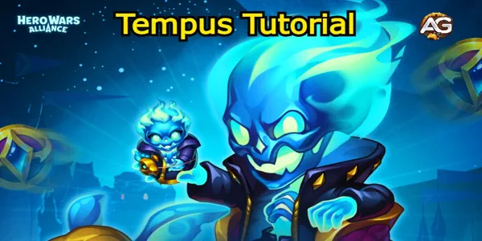
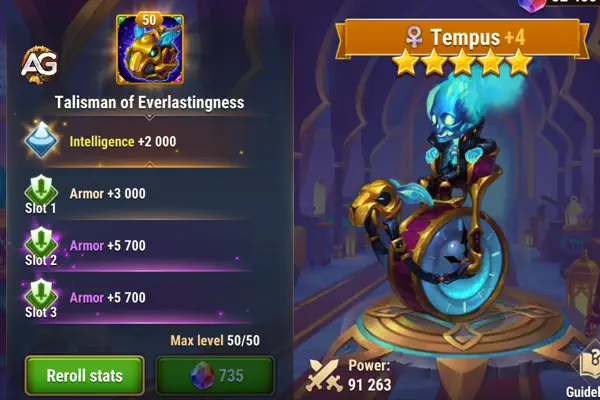

Descubra Tempus, o novo herói de Hero Wars, mestre da manipulação temporal! Confira sua habilidades únicas e dicas de como usá-lo para dominar suas batalhas.

Ilustração de Tempus, Evento do jogo Hero Wars Alliance, desenvolvido pela Nexters.
Tabela: Visão Geral das Estatísticas do Tempus
Função
Suporte
Facção
Caminho da Eternidade
Posição
Linha do Meio
Atributo Principal
Inteligência
Tipo de Dano
Mágico
Sinergias
Heróis do Caminho da Eternidade: Especialmente Iris, Phobos e também Xe'sha, Celeste
Tabela: Lista de Níveis de Tempus - Hero Wars Alliance
Lista de Níveis 2024
Classificação
Tier List Geral de Herói:
S+
Lista de Níveis da Hydra:
A
No universo em constante expansão de Hero Wars Alliance, um novo Guardião surgiu—Tempus, um mestre da manipulação do tempo. Nascido do tédio da vida eterna, Tempus escolheu se juntar às fileiras da facção Caminho da Eternidade, trazendo suas habilidades únicas de alteração temporal para ajudar seus companheiros Guardiões em combate.
Como um Herói de Suporte que atua na Linha do Meio, Tempus se especializa em controlar o fluxo da batalha, enfraquecendo inimigos e aumentando o poder de sua equipe, especialmente os usuários de magia.
Neste guia, vamos explorar as habilidades, artefatos e sinergias de Tempus, fornecendo dicas sobre como maximizar seu potencial em batalha.
Prioridades de Artefatos de Tempus
Tempus empunha um poderoso conjunto de artefatos focados em aprimorar seu poder mágico e sua sobrevivência:
3º Cronorrodas: Aumenta o Ataque Mágico.
1º - Tomo do Conhecimento Arcano: Aumenta o Ataque Mágico e a Vida, garantindo que Tempus permaneça mais tempo vivo na batalha para apoiar sua equipe.
2º - Anel de Inteligência: Amplifica sua Inteligência, fortalecendo ainda mais suas habilidades baseadas em magia.
Esses artefatos funcionam em conjunto para tornar Tempus uma força poderosa em combates mágicos, ajudando sua equipe a resistir ao dano físico enquanto maximiza sua produção mágica.
Prioridades de Evolução de Skin de Tempus na Hero Wars Alliance
1. Skin Padrão (Inteligência) – Primeira Prioridade
A Skin Padrão, que aumenta a Inteligência, é a principal prioridade para Tempus. Esta skin melhora significativamente tanto seu ataque mágico quanto sua defesa mágica, tornando-o um herói de suporte mais forte. Aumentar o ataque mágico de Tempus aprimora a eficácia de suas habilidades, enquanto a defesa mágica melhorada proporciona maior sobrevivência, especialmente contra inimigos baseados em magia. Esse equilíbrio entre ataque e defesa torna a Skin Padrão crucial para o desempenho geral de Tempus nas batalhas.
2. Skin Estelar (Ataque Mágico) – Segunda Prioridade
A Skin Estelar, que aumenta o ataque mágico, deve ser a segunda prioridade para Tempus. Esta skin foca em maximizar o dano de Tempus, permitindo que suas habilidades atinjam mais forte e se tornem mais impactantes no combate. Com esta skin, Tempus pode assumir um papel mais ofensivo, causando maior dano e contribuindo mais para o poder de fogo geral da equipe.
Sinergias
Tempus trabalha excepcionalmente bem com heróis do Caminho da Eternidade, mas é particularmente eficaz quando combinado com:
Iris: As habilidades de debuff de Iris complementam a manipulação do tempo de Tempus. Quando Tempus usa sua habilidade Cronostase, ela aumenta a duração dos debuffs de Iris.
Phobos: A habilidade Maldição de Phobos, que reduz a eficácia dos inimigos, torna-se ainda mais mortal quando combinada com as habilidades de Tempus que desaceleram e enfraquecem os inimigos.
Xe'Sha e Celeste: Esses poderosos magos se beneficiam das habilidades de manipulação do tempo de Tempus, permitindo que eles liberem magias devastadoras enquanto os inimigos estão desacelerados e incapazes de se defender.
Morrigan – Apoia Tempus com cura e aumentos de dano, ajudando a mantê-lo vivo na linha de frente.
Nebula – Potencializa o ataque mágico de Tempus com seus buffs, tornando-o ainda mais letal.
Dante – Protege Tempus de grandes danos explosivos enquanto ajuda a controlar o movimento dos inimigos.
Análise Detalhada do Talismã da Eternidade de Tempus
O Talismã da Eternidade de Tempus é uma melhoria essencial para este herói de suporte na facção Eternidade. Ele aumenta a Inteligência, aprimorando o seu ataque mágico e também elevando a armadura e a defesa mágica. Isso torna Tempus um herói de linha de frente mais durável, posicionando-se à frente de Morrigan e atrás de Dante, protegendo a equipe contra ataques inimigos.
Seu talismã fornece estatísticas defensivas importantes, transformando-o em um escudo confiável. Ele melhora a capacidade de Tempus de resistir a danos, ao mesmo tempo que oferece suporte sólido para o restante de sua equipe em situações tanto ofensivas quanto defensivas.

Tempus com o Talismã da Eternidade, Hero Wars Mobile.
Benefícios do Ataque Mágico e da Inteligência
O aumento da Inteligência é crucial porque todas as habilidades de Tempus escalam com o ataque mágico. Isso significa que quanto mais Inteligência ele ganha, mais fortes se tornam suas habilidades. Sua habilidade definitiva estende as apenalizações aplicados pelos aliados, como Dante e Iris.
Por exemplo, a cada ponto de Inteligência, o ataque mágico de Tempus melhora, permitindo que ele reduza as defesas mágica e física dos inimigos e prolongue as penalizações em até 2,5 segundos. Essa vantagem aparentemente pequena tem um impacto significativo ao longo de uma batalha.
Armadura e Defesa Mágica
Tempus frequentemente se posiciona na linha de frente, onde absorve tanto ataques físicos quanto mágicos. O Talismã aumenta sua armadura em até 6.600 por slot, oferecendo 19.800 pontos de armadura quando totalmente aprimorado, melhorando significativamente sua defesa.
Esse aumento de armadura transforma Tempus em um quase-tanque, permitindo que ele se mantenha mais tempo em combate e proteja seus companheiros, especialmente quando emparelhado com heróis como Dante e Iris, que dependem de sua sobrevivência.
Sinergia com Heróis da Eternidade
Tempus funciona excepcionalmente bem com heróis da Eternidade, como Dante, Iris e Faceless. Sua capacidade de estender as penalizações deles aumenta a eficácia geral da equipe. Essa sinergia é crucial ao enfrentar oponentes difíceis.
Por exemplo, quando emparelhado com Dante, Tempus pode estender as penalizações de Dante, permitindo maior controle sobre o campo de batalha. O aumento no ataque mágico proporcionado pelo talismã aprimora suas habilidades de redução de penalizações, ajudando ainda mais no controle do campo.
Valor Estratégico em Combate
O Talismã da Eternidade transforma Tempus em mais do que apenas um herói de suporte. Ele se torna uma peça-chave na linha de frente. Se sua equipe gira em torno de Dante e Iris, este talismã aumenta significativamente a utilidade de Tempus.
Seus atributos melhorados de ataque mágico e defesa ajudam-no a sobreviver, prolongar as penalizações e auxiliar no controle de multidões. Isso o torna valioso tanto em batalhas PvP quanto PvE, especialmente ao enfrentar inimigos mais difíceis em conteúdo de alto nível.
Vale a Pena Investir no Talismã de Tempus?
Sim, especialmente se você estiver montando uma equipe focada em heróis da Eternidade. O talismã é essencial para a sobrevivência e eficácia de Tempus. Embora adquiri-lo exija recursos significativos, cerca de 15.000 esmeraldas, vale o investimento.
Jogadores que priorizam estratégias free-to-play podem ganhar esmeraldas por meio de missões, tornando o talismã acessível. Uma vez adquirido, Tempus se torna um ativo mais formidável em qualquer batalha, aumentando as chances de sucesso da sua equipe em todos os cenários.
Sem o talismã, Tempus pode ter dificuldades na linha de frente, reduzindo sua capacidade de apoiar a equipe. Adquiri-lo cedo pode fazer uma diferença significativa em sua estratégia geral e nos resultados das batalhas.
Tempus possui um conjunto de habilidades que dobram o tempo, podendo interromper as estratégias inimigas enquanto fortalece sua equipe. Aqui está uma análise de suas habilidades principais e como usá-las de forma eficaz:
1. Cronostase
Descrição da Habilidade: Tempus para o tempo para todos os Heróis inimigos, congelando seus movimentos, uso de habilidades e esquiva. Durante esse tempo, a Armadura e a Defesa Mágica dos inimigos são reduzidas, e o tempo de recarga de todas as suas habilidades é interrompido. Essa habilidade também prolonga a duração de todas as Maldições e Debuffs que afetam os inimigos.
Estratégia: Cronostase é uma habilidade que muda o rumo da batalha. Ao congelar as ações e defesas dos inimigos, Tempus cria uma janela de oportunidade para os magos da sua equipe liberarem seus ataques mais poderosos sem medo de retaliação. Use essa habilidade em momentos cruciais, especialmente quando os inimigos estiverem prestes a usar habilidades de alto impacto, para neutralizar completamente a ameaça. Combinada com heróis como Iris e Phobos, ela permite explorar inimigos enfraquecidos e maximizar o dano.
2. Definhamento
Descrição da Habilidade: Tempus enfraquece temporariamente inimigos distantes à sua frente, reduzindo seu Ataque Físico e sua Saúde máxima.
Estratégia: Definhamento é particularmente eficaz contra atacantes físicos e inimigos da linha de frente. Essa habilidade permite que Tempus mitigue o dano de oponentes que dependem de Ataque Físico, além de reduzir sua Saúde máxima. Use isso para enfraquecer tanques ou causadores de dano inimigos, dando à sua equipe uma vantagem clara. Isso é especialmente eficaz quando Tempus está posicionado contra equipes com forte poder de dano físico.
3. Anomalia Temporal
Descrição da Habilidade: Tempus envia o Herói inimigo com a maior Penetração de Armadura para a Anomalia Temporal, onde ele é desacelerado, perde energia e sofre dano mágico contínuo ao longo do tempo.
Estratégia: Anomalia Temporal mira no inimigo com a maior Penetração de Armadura, tornando-o um contra-ataque ideal contra oponentes projetados para destruir as defesas da sua equipe. Ao isolar e enfraquecer esse alvo, Tempus garante que os tanques e heróis da linha de frente de sua equipe permaneçam protegidos por mais tempo. Além disso, o dano mágico ao longo do tempo pode ajudar a desgastar inimigos de alta prioridade.
4. Paradoxo Temporal
Descrição da Habilidade: Tempus invoca um grande relógio no centro do campo de batalha, criando uma área de efeito (AoE) que desacelera os inimigos enquanto acelera os aliados dentro de seu alcance.
Estratégia: Paradoxo Temporal é a habilidade suprema de controle de Tempus. A área de efeito afeta tanto inimigos quanto aliados, desacelerando os inimigos enquanto acelera a equipe de Tempus. Isso pode ser usado para controlar o ritmo da batalha, permitindo que seus aliados rapidamente superem e derrotem os oponentes. Em batalhas acirradas, a habilidade de manipular o tempo para ambos os lados pode ser a diferença entre a vitória e a derrota. Use o Paradoxo Temporal para impedir que os inimigos alcancem objetivos-chave ou garantir que sua equipe execute ataques com precisão letal.
Dicas para Jogar com Tempus
O Timing é Tudo: Tempus se destaca no controle do campo de batalha, por isso usar suas habilidades nos momentos certos é crucial. Não tenha pressa em usar Cronostase; espere até que os inimigos estejam prestes a lançar seus ataques ou quando os debuffs principais estiverem em vigor para maximizar sua eficácia.
Proteja seus Magos: Tempus é mais eficaz quando combinado com heróis baseados em magia. Use suas habilidades de manipulação do tempo para proteger magos vulneráveis de ataques físicos e dar-lhes tempo para liberar seus feitiços mais poderosos.
Mire em Oponentes Chave: Use Anomalia Temporal para neutralizar alvos prioritários como heróis inimigos com alta Penetração de Armadura. Ao remover essas ameaças temporariamente do campo de batalha, você dá à sua equipe uma vantagem significativa.
Maximize os Efeitos de Área: Paradoxo Temporal afeta tanto sua equipe quanto os inimigos, então o posicionamento é fundamental. Certifique-se de que sua equipe esteja dentro do alcance do relógio para se beneficiar do aumento de velocidade enquanto prende os inimigos em seu efeito de desaceleração.
Sinergize com Heróis de Debuff: Tempus brilha quando emparelhado com heróis que aplicam debuffs e maldições. Heróis como Iris e Phobos verão seus debuffs prolongados e amplificados por Cronostase, permitindo que você mantenha os inimigos enfraquecidos por mais tempo.
Conclusão
Tempus é um herói de suporte versátil e poderoso, cuja capacidade de manipular o tempo pode mudar completamente a dinâmica de uma batalha. Seu conjunto de habilidades único o torna inestimável em equipes centradas em usuários de magia e estratégias de debuff. Ao desacelerar os inimigos, enfraquecer suas defesas e aumentar o poder de seus aliados, Tempus oferece profundidade estratégica e uma vantagem tática. Para jogadores que buscam dominar a arte do controle no campo de batalha, Tempus é um herói essencial em Hero Wars Alliance.
Sugestões de Vídeo:
Vídeo: Descubra os Melhores Times com Tempus em Hero Wars Alliance.
Vídeo: Novo Herói Tempus Dicas e Habilidades Reveladas! Hero Wars Alliance.
Explore novas habilidades com nossos heróis em destaque!
Você gostou das nossas dicas sobre o personagem Tempus? Há algo que não entendeu ou gostaria de sugerir mudanças? Convidamos você a se juntar à nossa sessão de comentários na página do Alexandre Games Blog. Não hesite em expressar sua opinião, clarificar suas dúvidas e compartilhar sua sugestões. Clique no botão abaixo para começar:
 Hero Wars") Como Derrotar Cada Herói - Hero Wars
Como Derrotar Cada Herói - Hero Wars
 Tier List Hero Wars JvJ
Tier List Hero Wars JvJ